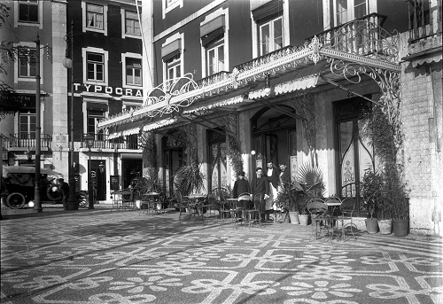
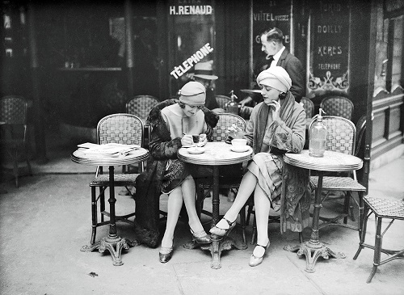
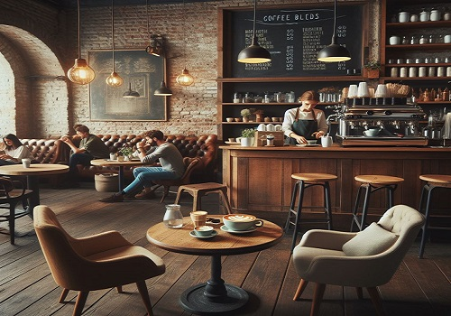

Em uma rua tranquila e arborizada,
no coração de uma pequena cidade, encontra-se a
cafeteria "COFFEE TIA ROSA". Fundada há mais de
50 anos, está pitoresca cafeteria tem sido um ponto de
encontro querido para moradores locais e visitantes ao longo das décadas.

Tudo começou em 1965,
quando a jovem empreendedora Maria Rosa
decidiu abrir sua própria cafeteria, inspirada pela
paixão de sua avó pela culinária e pela arte de fazer café.
Com uma pequena economia e muita determinação, ela transformou
um antigo edifício abandonado em um charmoso café,
decorado com móveis rústicos e detalhes acolhedores.

Ao longo dos anos, a cafeteria "COFFEE TIA ROSA" passou
por várias gerações da família de Maria Rosa, mantendo sempre a tradição
e o compromisso com a excelência. Hoje, sob a gestão da neta de Maria Rosa ,
Ana Rosa, a cafeteria continua a ser um local querido,
onde as pessoas se reúnem para desfrutar de boa companhia e
café de qualidade.
Com o passar dos anos, a cafeteria "COFFEE TIA ROSA"
tornou-se mais do que um simples café - tornou-se parte integrante da
história e da comunidade da cidade. E, enquanto continuarem a servir
café com amor e dedicação, a história desta
cafeteria única continuará a ser contada por muitas gerações futuras.